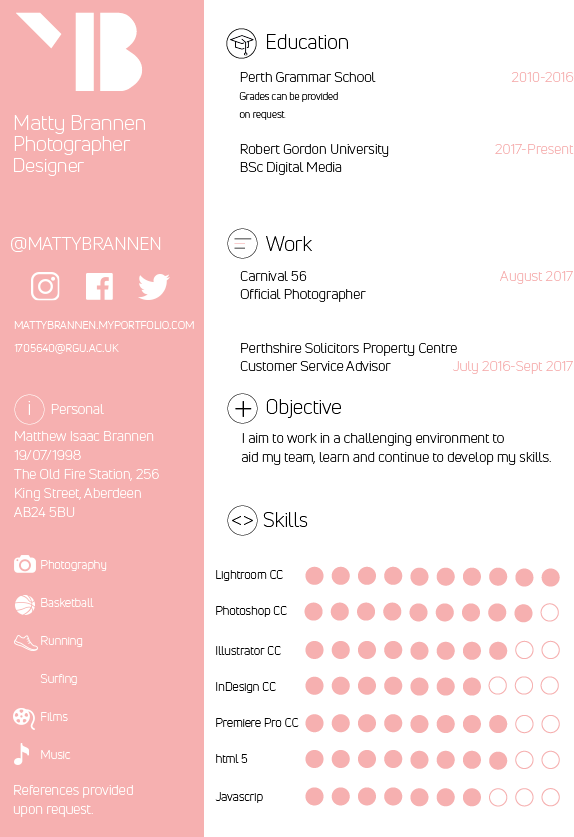

About Me
Matthew Brannen

I am a 19 year old photographer and designer living in Scotland. I am currently studying Digial Media at RGU in Aberdeen. My work varys from professional shoots to personal projects.
In the summer of 2017 I was one of the official photographers for Scotland's newest festival "Carnival 56." I shot some big acts like Prides, The Fratellis, Rudimental and Mark Ronson. My work has also been published by VisitScotland.
My photography not focused on one particular area. I shoot a lot of Street photography as well as concert and landscapes. I have a passion for learning more about photography and also use my Dad's old Olympus OM10 film camera as well as my modern DSLR. This has allowed me to experiment and improve on my skills as using 35mm film costs per roll and for development.
The added risk of ruining a shot or entire roll creates pressure when I'm shooting but makes me think through my settings and composition before I take the frame.
This is my CV. I you have any questions please don't hesitate to use the contact page.
